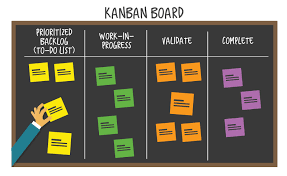

Один из инструментов, который может использоваться при внедрении метода управления разработкой «Канбан».
Такие доски можно рассматривать как вариацию на тему традиционных канбан-карточек. Вместо сигнальных карточек, которые обычно обозначают потребность или пропускную способность, вместе с доской используются магниты, пластиковые фишки, цветные шайбы или стикеры для представления рабочих элементов и процессов
